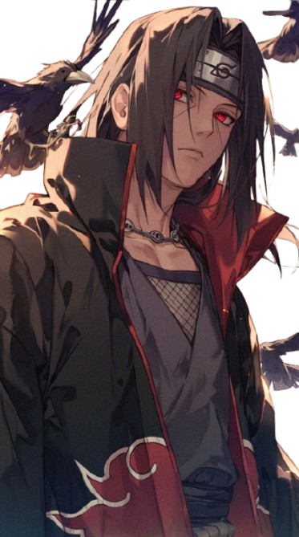

CATALOGO DE ANIMES
Acción:


Romance:


Peliculas:


El mejor contenido de anime.

Itachi nació en el Clan Uchiha como el hijo mayor de Fugaku y Mikoto Uchiha. Desde joven, fue considerado un genio y sobresaliente en su generación, superando las expectativas del clan. A los cuatro años, fue testigo de la muerte de muchas personas en la Tercera Guerra Mundial Shinobi, lo que lo traumatizó y lo llevó a ser pacifista. A los siete años, se graduó de la Academia Ninja y dominó el Sharingan a los ocho, convirtiéndose en capitán de ANBU a los trece.
Itachi Uchiha fue muy valorado por su padre, quien veía en él el futuro de la familia, descuidando a su hermano menor, Sasuke. A pesar de esto, Itachi mostró cariño por Sasuke y lo animó a ir a su ceremonia de inscripción en la Academia. Cuando el Clan Uchiha planeó un golpe de Estado contra Konoha, Itachi, como miembro de ANBU, decidió espiar a su propio clan en lugar de apoyarlos, inf ormando al Tercer Hokage. Comenzó a comportarse de manera extraña, dejando de asistir a reuniones y siendo acusado de la muerte de su mejor amigo, Shisui. Esto llevó a su padre a poner más atención en Sasuke. Los intentos de negociación del Tercer Hokage fracasaron, y Danzo ordenó a Itachi exterminar al Clan Uchiha. Itachi aceptó con la condición de que su hermano no fuera dañado, creyendo que un Uchiha debería cobrar venganza en el futuro.